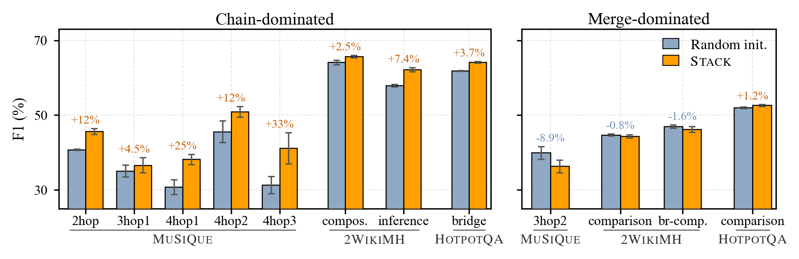
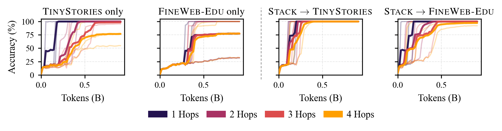
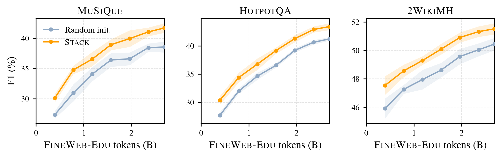

Lasting Effects of
Abstract Pretraining
Beyond Perplexity
A small dose of abstract data. A lasting change in how models reason.
Abstract warm-up
Learn to track and compose.
Natural language
Learn from real-world text.
Multi-hop reasoning
Connect dependent facts.
Change the starting point. Keep the architecture and downstream training protocol fixed.
Similar perplexity.
Different capabilities.
Language models usually begin with random weights. We give them a brief warm-up on abstract stack operations before they ever see natural language.
This simple change improves multi-hop question answering and accelerates learning of deeper reasoning chains. The gains can remain hidden in language-modeling perplexity, yet persist through billions of subsequent language tokens.
Largest gain on MuSiQue
SmolLM-135M · token-level F1
Abstract warm-up budget at 360M
~80M abstract / 7.2B language tokens
SmolLM-135M & SmolLM-360M
Three multi-hop QA benchmarks
The gains appear
in reasoning.
STACK improves multi-hop QA after fine-tuning, without a corresponding improvement in language modeling.
Multi-hop question answering
Token-level F1 · higher is better
Nearly the same loss.
A different starting point.
At 135M, validation-loss curves converge to essentially the same value.
Evaluation settings & exact values
| Benchmark | Random init. | STACK | Δ F1 |
|---|
Each benchmark has a separate fine-tuning run: one epoch on approximately 20,000 examples, with overlength examples excluded. MuSiQue uses gold supporting paragraphs; HotpotQA and 2WikiMultiHopQA include distractors. Language-token budgets are matched; the abstract warm-up adds ~80M tokens.
Download the chart data (JSON)Adapted from Figure 2. Values come from the supplied experiment summaries and validation-loss logs. The 360M result on 2WikiMultiHopQA is essentially unchanged.
No world knowledge.
Just structure.
The model predicts the contents of a memory after a sequence of push and pop operations. Success requires tracking state across the sequence.
Last in, first out.
A pop removes the most recently added token. The remaining contents depend on the whole sequence.
Step through the same operations under each rule.
Start with an empty memory.
Replacing the stack with a queue keeps the surface task similar, but does not reproduce the same reasoning gains. The computation learned from the data matters.
Better at following
a chain of reasoning.
The improvements concentrate on sequential composition: answering one question supplies the information needed to answer the next.
Dependent reasoning chains
Each step uses the previous answer.
Merging or comparing facts
Separate branches contribute to an answer.

Deeper chains become easier to learn.
On the controlled DEPO task, models follow links through a directed graph. With a STACK warm-up, they learn faster and reach near-perfect accuracy across one to four hops. Language-only baselines still struggle with four-hop queries at the end of training.

The right data.
At the beginning.
The same abstract task has a different effect depending on when it appears. A dedicated initial phase produces the largest gain.
A small intervention, timed differently.
Mean Δ F1 across three QA benchmarks · SmolLM-135M
A dedicated STACK phase before any language tokens gives the strongest average improvement.
Adapted from Figure 9. Each insertion uses a separate abstract-training phase; the language schedule pauses and then resumes. These are observed schedules, not an interpolated prediction.
The early advantage lasts.
At every evaluated SmolLM-135M language-pretraining checkpoint, STACK-initialized models achieve higher F1 after separate task-specific fine-tuning. The early advantage remains visible through billions of language tokens.

Evaluate the capabilities
you want to build.
Perplexity alone can miss meaningful differences in what a model learns. The structure of abstract data, the capability being evaluated, and the timing of exposure all determine whether transfer is useful.
Scope of the evidence. These experiments focus on STACK and small language models (135M and 360M). They do not establish a universal benefit across tasks or larger model scales, and the underlying mechanism remains an open question.
The paper & resources
Read the full paperRead the abstract
Language models are typically pretrained from random initialization. Recent work challenges this convention, showing that a brief warm-up on abstract, algorithmically generated data can provide a better starting point for subsequent learning of natural language. In this paper, we show that in small language models, such a warm-up improves specific capabilities that are not reflected in language-modeling perplexity. Our warm-up uses an abstract stack-manipulation task that requires compositional and state-tracking capabilities. Allocating as little as 1% of pretraining tokens to this data improves multi-hop question answering by up to 3.9 F1 points on MuSiQue, with additional gains on HotpotQA and 2WikiMultiHopQA despite comparable language-modeling perplexity. Controlled experiments further show that the warm-up substantially accelerates the acquisition of deeper reasoning chains. We also explore what drives this transfer. First, the precise structure of the data matters: replacing the stack task with a queue manipulation fails to produce the same gains. Second, the gains are specific: performance improves on sequential reasoning chains, with no consistent benefit on tasks that combine or compare independent facts. Third, timing matters: mixing abstract data with natural language is far less effective than an initial dedicated phase, and exposure after pretraining completely removes the benefits. The early advantage also persists through billions of subsequent language tokens. These results show that early training on abstract data can reliably shape the capabilities that language models later acquire.
Citation
@misc{shinnick2026lasting,
title = {Lasting Effects of Abstract Pretraining Beyond Perplexity},
author = {Shinnick, Zachary and Saratchandran, Hemanth and
Teney, Damien and van den Hengel, Anton},
year = {2026},
note = {Preprint},
url = {https://zlshinnick.github.io/beyond-perplexity/}
}Experiment code will be released upon publication, as noted in the paper.